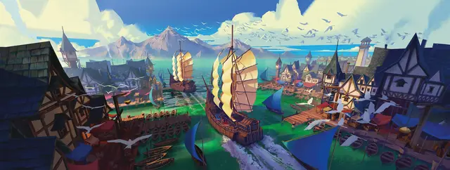

Моряк
Sailor

Вы много лет плавали на морском судне. Вы видели могучие шторма, глубоководных чудовищ и тех, кто хотел отправить вас на дно. Первая любовь осталась далеко за горизонтом, и настало время попробовать что-то новое.
Решите вместе с Мастером, на каком корабле вы до этого плавали. Это было торговое, пассажирское, исследовательское или пиратское судно? Насколько оно прославилось (в хорошем или дурном смысле)? Много ли вы путешествовали? Оно всё еще на плаву, потоплено или утеряно?
Кем вы были на борту — боцманом, капитаном, лоцманом, коком или кем-то другим? Кем были капитан и его первый помощник? Вы расстались с экипажем в хороших отношениях или поссорились с ними?
Владение навыками: Атлетика, Восприятие.
Владение инструментами: Инструменты навигатора, транспорт (водный).
Снаряжение: Кофель-нагель (дубинка), 50 футов шёлковой верёвки, талисман, такой как кроличья лапка или камень с дыркой (можете совершить бросок по таблице безделушек), комплект обычной одежды, поясной кошель с 10 зм.
Умение: поездка на корабле
Если понадобится, вы можете получить бесплатную поездку на паруснике для себя и своих спутников. Это может быть ваш старый корабль, или другой корабль, с которым вы находитесь в хороших отношениях (возможно, им командует ваш бывший напарник). Вам оказывают услугу, поэтому вы не можете устанавливать распорядок и прокладывать маршрут. Мастер сообщит, сколько времени уйдёт на плавание. В обмен на бесплатную поездку от вас и ваших спутников ожидают посильную помощь экипажу во время плавания.
Персонализация
Моряки бывают грубыми, но на их плечах лежит груз ответственности за сохранение жизни экипажа, поэтому на них можно положиться. Жизнь, проведённая на корабле, формирует их взгляды и самые важные привычки.
| к8 | Черта характера |
| 1 | Друзья знают, что всегда могут на меня положиться. |
| 2 | Я усердно тружусь, чтобы потом можно было хорошо отдохнуть. |
| 3 | Мне нравится заходить в новые порты и находить друзей за кружечкой эля. |
| 4 | Я готов приврать, чтобы получился хороший рассказ. |
| 5 | Для меня драка в таверне — отличный способ познакомиться с новым городом. |
| 6 | Я никогда не откажусь от пари. |
| 7 | Я ругаюсь как банда орков. |
| 8 | Мне нравится, когда работа выполнена, особенно если её можно поручить другому. |
| к6 | Идеал |
| 1 | Уважение. Корабль держится целым благодаря взаимному уважению капитана и экипажа. (Добрый) |
| 2 | Справедливость. Все мы делаем одно дело, и награду должны делить поровну. (Законный) |
| 3 | Свобода. Море это свобода — свобода идти куда угодно и делать что угодно. (Хаотичный) |
| 4 | Власть. Я хищник, а другие корабли в море — моя добыча. (Злой) |
| 5 | Команда. Я предан экипажу, а не идеалам. (Нейтральный) |
| 6 | Стремление. Когда-нибудь у меня будет свой корабль, и я проложу курс куда захочу. (Любой) |
| к6 | Привязанность |
| 1 | В первую очередь я верен своему капитану, всё остальное вторично. |
| 2 | Самое важное — это корабль, а экипаж и капитаны постоянно меняются. |
| 3 | Я всегда буду помнить свой первый корабль. |
| 4 | В гавани у меня есть возлюбленная, глаза которой стоят того, чтобы оставить ради неё море. |
| 5 | Как-то раз мне выплатили не полную долю с дохода, и я хочу вернуть себе причитающееся. |
| 6 | Безжалостные пираты убили моего капитана и почти всю команду, разграбили корабль, и оставили меня умирать. Месть будет страшной. |
| к6 | Слабость |
| 1 | Я выполняю приказы, даже если считаю, что они несправедливые. |
| 2 | Я наплету с три короба, лишь бы не делать лишнюю работу. |
| 3 | Когда кто-то бросает мне вызов, я никогда не отступлюсь, какой бы опасной не была ситуация. |
| 4 | Начав пить, я не могу остановиться. |
| 5 | Не могу ничего поделать, но деньги у меня не задерживаются. |
| 6 | Моя гордость меня когда-нибудь погубит. |
Разновидность моряка: пират
Вы провели молодость среди жутких пиратов, безжалостных головорезов, научивших вас выживать среди акул и дикарей. Вы занимались грабежом в морях, и не одну душу отправили в солёную пучину. Вы хорошо знакомы со страхом и кровью, и заслужили сомнительную репутацию во многих портовых городах.
Если вы решите, что во время плаваний по морю вы занимались пиратством, можете выбрать умение Дурная репутация (смотрите во врезке) вместо умения Поездка на корабле.
Альтернативное умение: дурная репутация
Если у вашего персонажа предыстория моряка, можете выбрать это умение вместо умения Поездка на корабле.
Где бы вы ни оказались, вас боятся из-за вашей репутации. Находясь в цивилизованном поселении, вы можете безнаказанно совершать небольшие преступления, такие как отказ платить за еду в таверне или выламывание двери в магазине, так как жители боятся сообщать о вас властям.